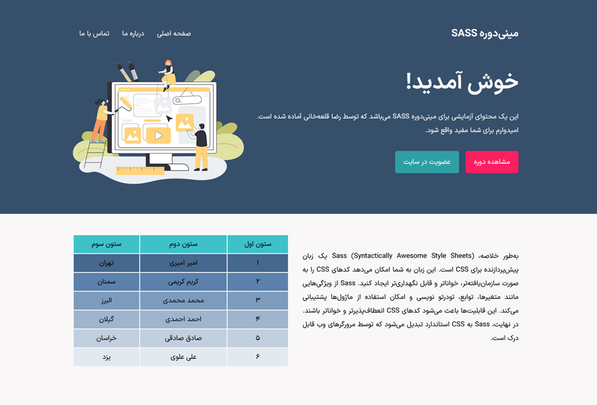

معرفی SASS
سرواژه SASS، مخفف Syntactically Awesome Style Sheets، یک پیشپردازنده CSS است که به شما اجازه میدهد از امکاناتی مانند متغیرها، توابع، و وراثت استفاده کنید تا کد CSS خود را سازماندهیشدهتر و کارآمدتر بنویسید. علاوه بر SASS پیشپردازندههای دیگری نیز برای CSS وجود دارد که معروفترین آنها LESS و Stylus هستند.
ویژگیهای SASS
- متغیرها (Variables): متغیرها به شما اجازه میدهند مقادیر قابل استفاده مجدد را در سراسر پروژه تعریف کنید. برای مثال، میتوانید رنگهای اصلی سایت یا اندازههای خاصی را به عنوان متغیر ذخیره کنید.
- تو در تویی (Nesting): SASS اجازه میدهد که کد CSS خود را به صورت تو در تو بنویسید تا ساختار کد شما مشابه ساختار HTML باشد، که این کار خوانایی و نگهداری کد را بهبود میبخشد.
- ماژولها (Modules): ماژولها به شما اجازه میدهند کد خود را به فایلهای کوچکتر تقسیم کنید و سپس آنها را در فایل اصلی خود وارد کنید.
- توابع (Functions): توابع در SASS به شما امکان میدهند محاسبات و عملیات تکراری را انجام دهید و از نتیجه آن در کد خود استفاده کنید.
- وراثت (Inheritance): وراثت به شما امکان میدهد خصوصیات یک کلاس را به کلاس دیگری منتقل کنید.
- شرطها (Conditionals): شرطها به شما اجازه میدهند که بر اساس شرایط خاصی، کد CSS متفاوتی تولید کنید.
- حلقهها (Loops): حلقهها در SASS به شما اجازه میدهند کد CSS تکراری را به صورت خودکار تولید کنید.
فرمت فایلهای SASS
کدهای زبان SASS داخل فایلهایی با فرمت scss. یا sass. ذخیره میشوند و بعد از
کامپایل شدن، فایلهایی با فرمت css. برای شما ایجاد میکنند.
در این مینیدوره آموزشی ما از فایلهای scss. استفاده میکنیم که رایجتر هستند.
متغیرها (Variables)
در SASS، میتوانید متغیرها را با استفاده از علامت دلار ($) تعریف کنید. برای مثال:
$primary-color: #333;
$padding: 10px;
body {
color: $primary-color;
padding: $padding;
}بعد از کامپایل شدن این کدها، خروجی CSS زیر تولید میشود:
body {
color: #333;
padding: 10px;
}
تو در تویی (Nesting)
تو در تویی در SASS به شما اجازه میدهد که به صورت تو در تو CSS بنویسید تا ساختار کد شما شبیه HTML باشد:
nav {
ul {
margin: 0;
padding: 0;
list-style: none;
}
li { display: inline-block; }
a {
display: block;
padding: 6px 12px;
text-decoration: none;
}
}
بعد از کامپایل شدن این کدها، خروجی CSS زیر تولید میشود:
nav ul {
margin: 0;
padding: 0;
list-style: none;
}
nav li { display: inline-block; }
nav a {
display: block;
padding: 6px 12px;
text-decoration: none;
}
ماژولها (Modules)
ماژولها به شما کمک میکنند تا کد CSS خود را به فایلهای کوچکتر تقسیم کنید و سپس آنها را وارد فایل اصلی خود کنید:
// _variables.scss
$primary-color: #333;
// main.scss
@import 'variables';
body {
color: $primary-color;
}بعد از کامپایل شدن این کدها، خروجی CSS زیر تولید میشود:
body {
color: #333;
}
توابع (Functions)
توابع در SASS به شما امکان میدهند که عملیات پیچیدهای را انجام دهید و از نتایج آن در کد CSS خود استفاده کنید:
@function calculate-spacing($factor) {
@return $factor * 8px;
}
.container {
margin: calculate-spacing(2);
}بعد از کامپایل شدن این کدها، خروجی CSS زیر تولید میشود:
.container {
margin: 16px;
}وراثت (Inheritance)
وراثت به شما امکان میدهد که خصوصیات یک کلاس را به کلاس دیگری منتقل کنید:
%message {
border: 1px solid #ccc;
padding: 10px;
color: #333;
}
.success {
@extend %message;
border-color: green;
}
.error {
@extend %message;
border-color: red;
}بعد از کامپایل شدن این کدها، خروجی CSS زیر تولید میشود:
.success {
border: 1px solid #ccc;
padding: 10px;
color: #333;
border-color: green;
}
.error {
border: 1px solid #ccc;
padding: 10px;
color: #333;
border-color: red;
}شرطها (Conditionals)
شرطها به شما اجازه میدهند که بر اساس شرایط خاصی کد CSS متفاوتی تولید کنید:
$theme: dark;
body {
@if $theme == dark {
background: #333;
color: #fff;
} @else {
background: #fff;
color: #000;
}
}بعد از کامپایل شدن این کدها، خروجی CSS زیر تولید میشود:
body {
background: #333;
color: #fff;
}حلقهها (Loops)
حلقهها در SASS به شما اجازه میدهند کد CSS تکراری را به صورت خودکار تولید کنید:
@for $i from 1 through 3 {
.column-#{$i} {
width: 100% / $i;
}
}بعد از کامپایل شدن این کدها، خروجی CSS زیر تولید میشود:
.column-1 {
width: 100%;
}
.column-2 {
width: 50%;
}
.column-3 {
width: 33.3%;
}نصب SASS
برای نصب SASS بر روی سیستم عامل خود میتوانید از روشهای مختلفی استفاده کنید که سادهترین آنها روش زیر است:
نصب و فعالسازی اکستنشن Live Sass Compiler بر روی ادیتور محبوب VSCode
همچنین میتوانید با استفاده از ابزارهای مدیریت پکیج (package manager) نیز SASS را روی سیستم عامل خود نصب کنید:
۱- با استفاده از پکیج منیجر Node.js
npm install -g sass۲- با استفاده از Chocolatey در سیستم عامل ویندوز
choco install sass۳- با استفاده از Homebrew در سیستم عامل MacOS X و Linux
brew install sass/sass/sass۴- میتوانید سورس SASS را از گیتهاب پروژه دانلود کرده و آن را به PATH سیستم عامل خود اضافه کنید: https://github.com/sass/dart-sass
بهترین تنظیمات برای اکستنشن Live Sass Compiler
"liveSassCompile.settings.formats": [
{
"format": "expanded",
"extensionName": ".css",
"savePath": "/assets/css",
},
{
"format": "compressed",
"extensionName": ".min.css",
"savePath": "/assets/css",
}
],
"liveSassCompile.settings.generateMap": false,
"liveSassCompile.settings.autoprefix": [
"> 1%",
"last 2 versions",
"Firefox ESR"
],
"liveSassCompile.settings.showOutputWindowOn": "None",منابع
جهت مطالعه بیشتر در مورد این زبان کاربردی میتوانید به مستندات SASS به نشانی https://sass-lang.com/documentation مراجعه نمایید.
کدهای دوره
کلیه کدهای مورد استفاده در این دوره را میتوانید در این ریپازیتوری گیتهاب مشاهده و دانلود نمایید.